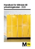
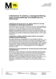
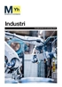
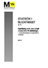
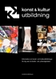

Publikationer
Här hittar du Myndigheten för yrkeshögskolans rapporter, faktablad, broschyrer, informationsblad och andra publikationer. Du kan välja typ av publikation, område och utgivningsår nedan.
-

Handbok för tillträde till yrkeshögskolan - 2020
Utgiven: 2020-07-10
Denna handbok vänder sig i första hand till de som bedriver yrkeshögskoleutbildning och behöver stöd...
Handbok för tillträde till yrkeshögskolan - 2020 -

Kvalitetskriterier för validering - yrkeshögskoleutbildning, konst- och kulturutbildningar och tolkutbildning inom folkbildningen
Utgiven: 2020-06-09
Myndigheten har tagit fram kvalitetskriterier för arbetet med validering inom de utbildningsformer som...
Kvalitetskriterier för validering -
Områdesanalys hälso- och sjukvård samt socialt arbete
Utgiven: 2020-05-19
Områdesanalysen är framtagen av Myndigheten för yrkeshögskolan som ett underlag för de handläggare som...
Ladda ner områdesanalysen här -

Områdesanalys industri
Utgiven: 2020-05-14
Områdesanalysen är framtagen av Myndigheten för yrkeshögskolan som ett underlag för de handläggare som...
Ladda ner områdesanalysen här -

Statistik i blickfånget
Utgiven: 2020-05-12
Statistik i blickfånget nummer 10. Uppföljning av de som ej tagit examen från YH-utbildningar - avklarade...
Statistik i blickfånget -
Regeringsuppdrag - Införande av korta utbildningar inom yrkeshögskolan
Utgiven: 2020-04-30
Myndigheten för yrkeshögskolan har fått i uppdrag att införa korta yrkeshögskoleutbildningar i form av...
Läs mer i rapporten -
Statistisk årsrapport 2020
Utgiven: 2020-04-30
Myndigheten för yrkeshögskolan presenterar i denna rapport en samlad redovisning med statistik om studerande...
Ladda ner årsrapporten här -
Områdesanalys pedagogik
Utgiven: 2020-04-28
Områdesanalysen är framtagen av Myndigheten för yrkeshögskolan som ett underlag för de handläggare som...
Ladda ner områdesanlysen här -
Områdesanalys Ekonomi, administration och försäljning
Utgiven: 2020-04-22
Områdesanalysen är framtagen av Myndigheten för yrkeshögskolan som ett underlag för de handläggare som...
Ladda ner områdesanlysen här -

Folder: Konst- och kulturutbildning
Utgiven: 2020-04-21
Den här foldern informerar om utbildningsformen konst- och kulturutbildningar och vänder sig i första...
Ladda ner publikationen här
Sidan 1 av 23